Mahanandi Gouloka is the only gouloka where we can see more than 31 cow breeds out of the 41 different cow breeds of Indian heritage.
More than 400 cows are rared in this gouloka. Gouloka spreads information and awareness about the heritage breeds of our country.
Everyday about 1000 kilo of dry grass and cow feed will be allocated for the growth and development of livestock.
It is intended to make Gauloka a center for the realization of development, economic empowerment and research on national breeds.
Mahanandi Gauloka has undertaken intiative for breeding, treatment and related case studies of cows for which gouloka has a systematic management of beef products, identification of good milk yeilding breeds, Many mediciens and organic mannuer are produced using goumuthra and goumaya.
The conserved breeds of gouloka include Dangi, Baragur, Amruthamahal, Deoni, Gangatiri, Gaolao, Gir, Hallikara, Hariana, Javari, Kangayam, Kankrej, Kasaragod, Kenthaka,
kerigar, Lal Khandhari, Malavi, Malenaadu Gidda, Nagori, Nirmari, Onagol, Ponuvar, Rathi, Sahiwal, Vechur, Khilari, Punganoor and many more.
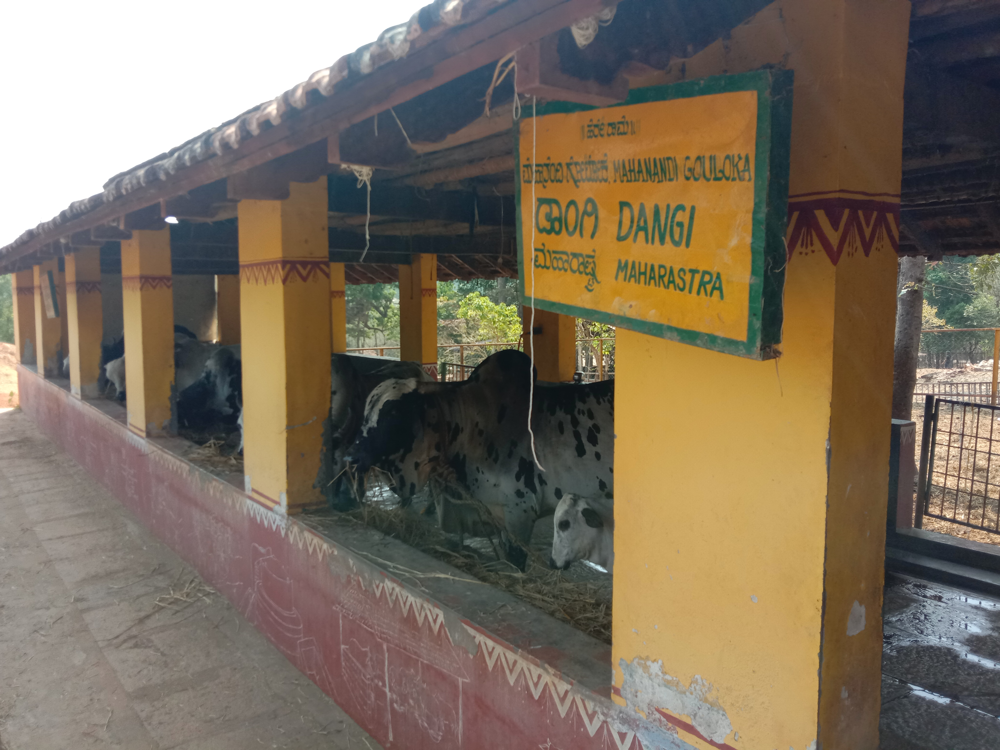
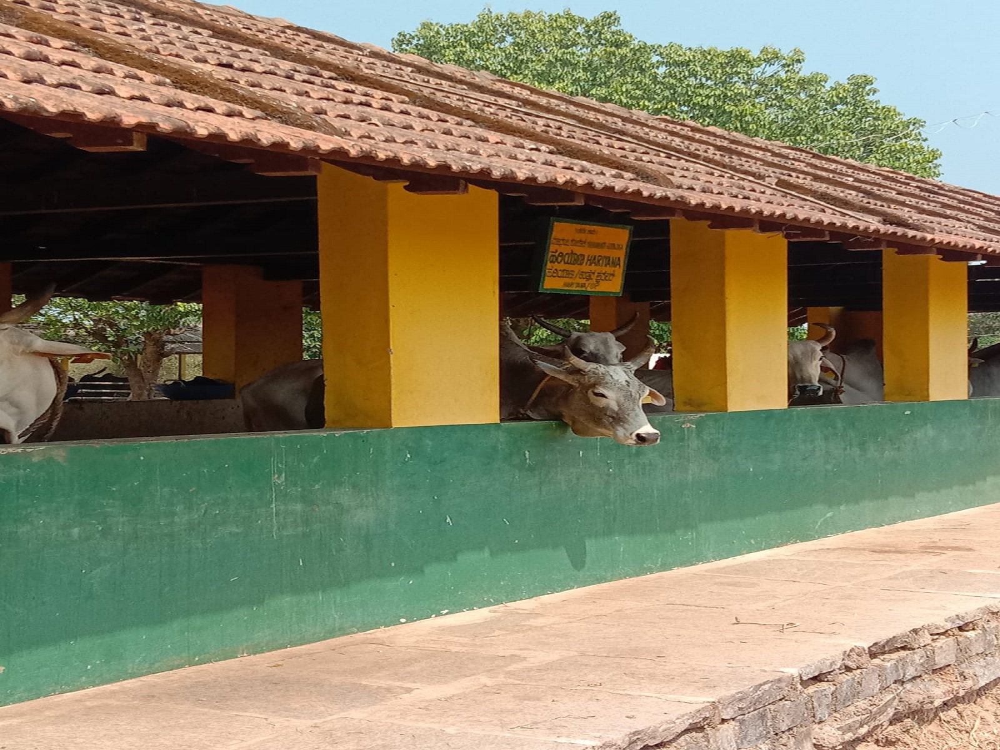
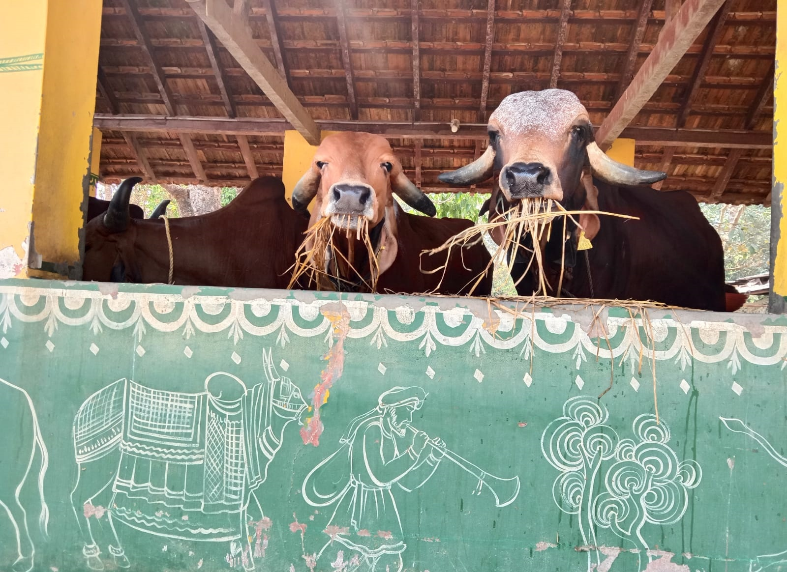
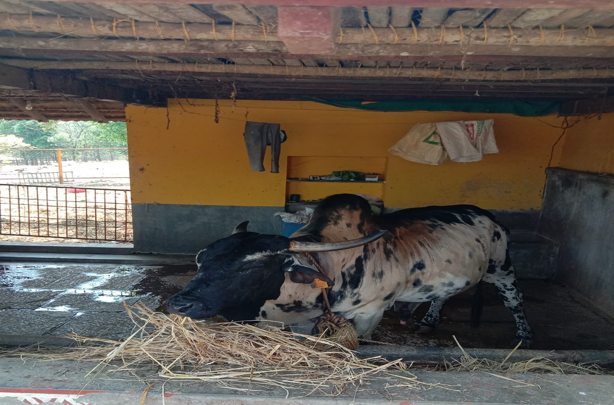
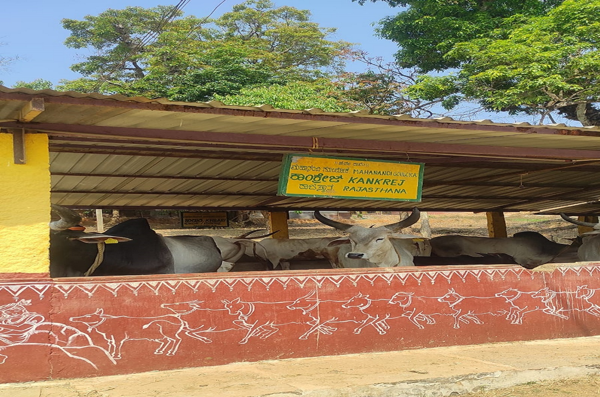
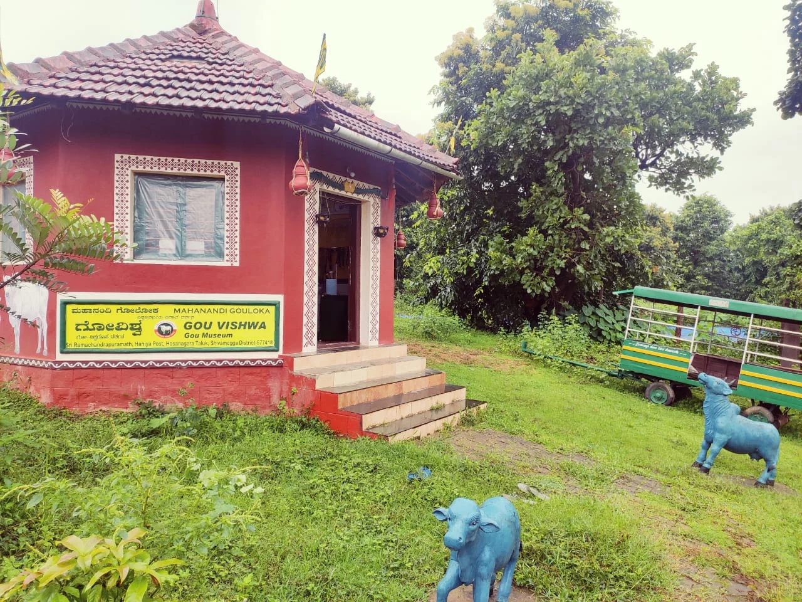
Gou Vishwa
There might be museums related to various subjects. Or let us say they exist. But a museum for Gou, also known as Mother of the Universe, Mother of the world, to exist is rare indeed! Such a unique museum based on cows and agriculture, which is an encyclopedia, is indeed the peculiarity of the state. This peculiar Gou Vishwa museum is set in the beautiful surroundings of Mahanandi Gouloka at Sri RamachandrapuraMatha, which is the place where huge mass movements like GouYatra, Vishwa Gou Sammelana, etc. were organized for the protection of Bharatiya Gou Vamsha.
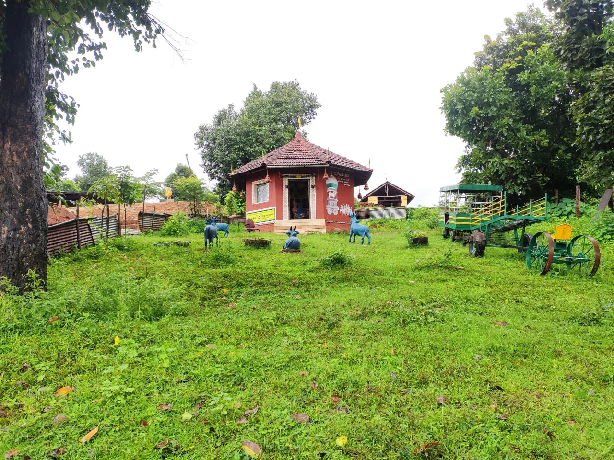
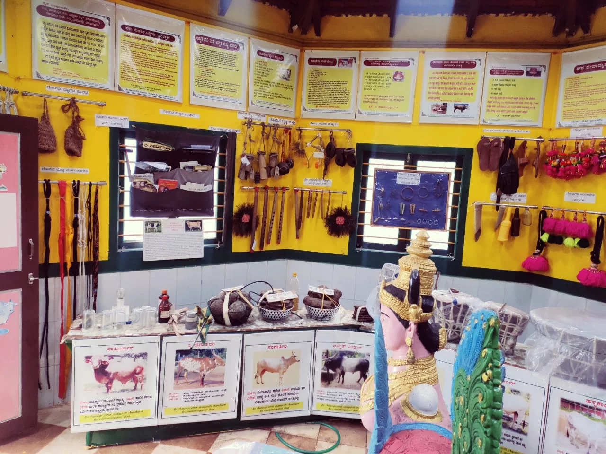
There are tens of things related to Gou related articles, tools related to Gou based farming and Gou based products. If we say that this museum houses a different world containing agricultural tools, Clock running on Gou-Mutra (Cow Urine), Clock running on curd, generation of electricity from cow dung, etc. then it is not wrong.
Gou Vishwa museum was established due to the relentless efforts of Retired Assistant Veterinary officer and Nitya Gou Sevaka Shri.K.D.Krishnaraj Urs. There is an important aim behind the establishment of Gou Vishwa. In the present times, it is necessary to create an interest in the minds of the youth about the importance of Gou and its products and agricultural tools. Even many of the farmers have left rearing cows. This museum aims to provide information about the special importance of Gou, specific information related to them(various breeds) and their specific uses.
Govardhanagirdhari temple
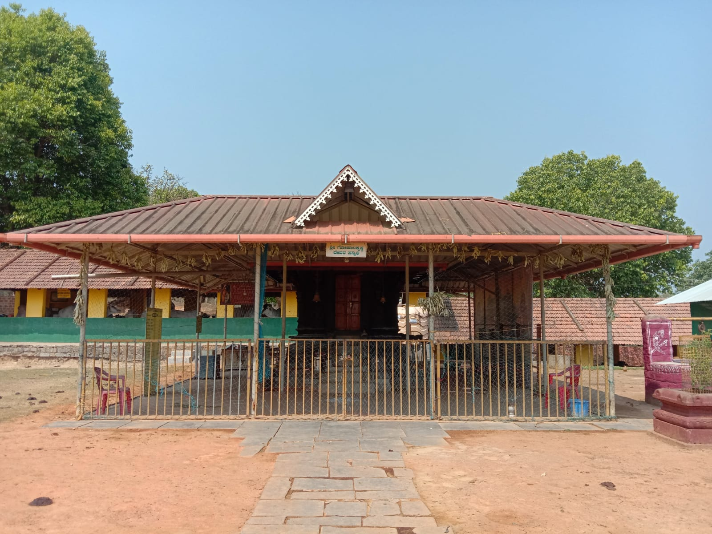
Lord Sri Krishna highlighted the glory of cows by being a cowherd. He protected cows and mankind by lifting the Govardhana mountain with his little finger. The attractive Gopalakrishna temple houses the idol of Lord Krishna lifting the Govardhana mountain. It is located in the centre of Mahanandi Gouloka surrounded by cows of all 30 breeds enjoying a carefree life. The suprabhata or the morning alarm for Lord Krishna here is the mooing of the cows. The Lord as the smiling Gopalakrishna carved on black stone is the protector of the cattle here. This amazing and unique goushala is present on the bank of river Sharavati amidst serene surroundings of Sri Ramachandrapura Matha, Hosanagara.
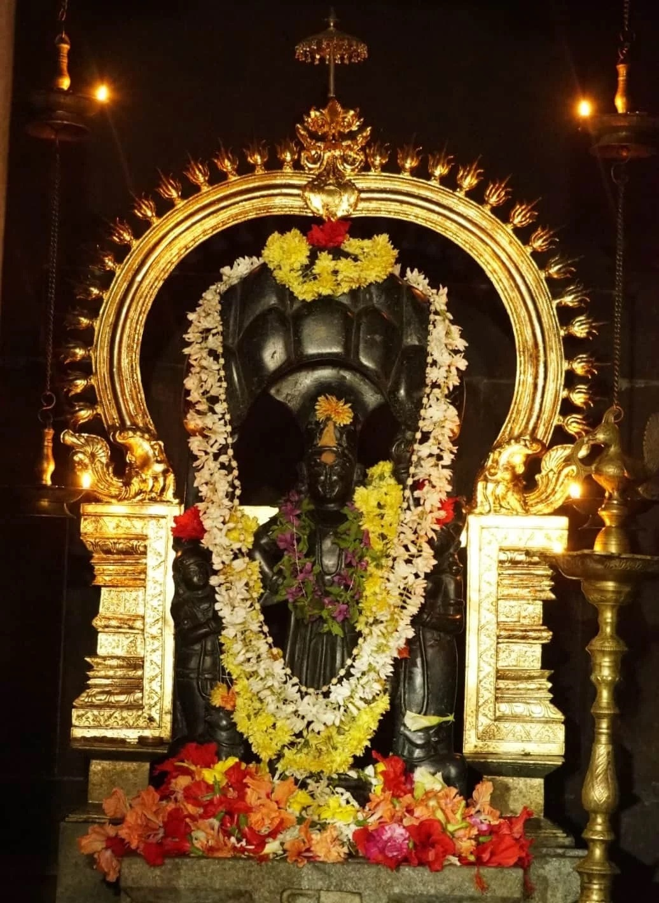
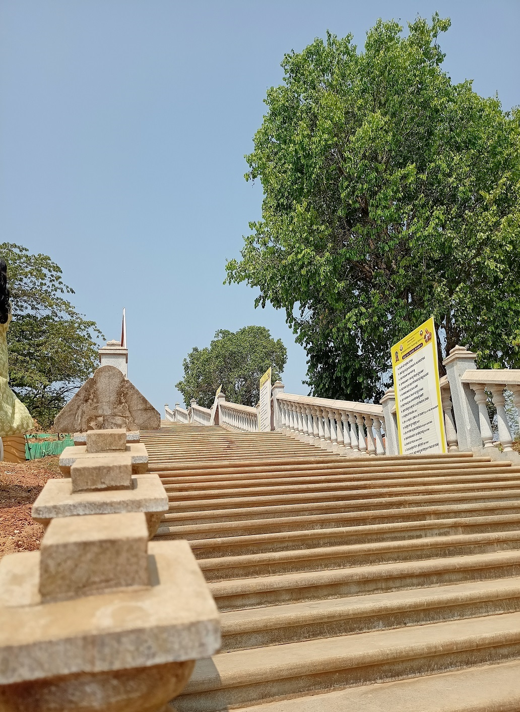
The idea of having the lord giridhari sarrounded by the goumatha is amazing, It visualizes the wonderful picture of lord Kirshna in Brindavan.
To reach the giridhari mandira we need to climb 108 steps which is named as sopanamale, where the visitors can pray lord Sri Vishnu at every step.
It was best place experience the rich heritage of Indian cow breeds and visualize giridhari in gouloka.
Temple pooja timings
Morning : 7:30 - Afternoon : 12:30 - Evening : 7:00